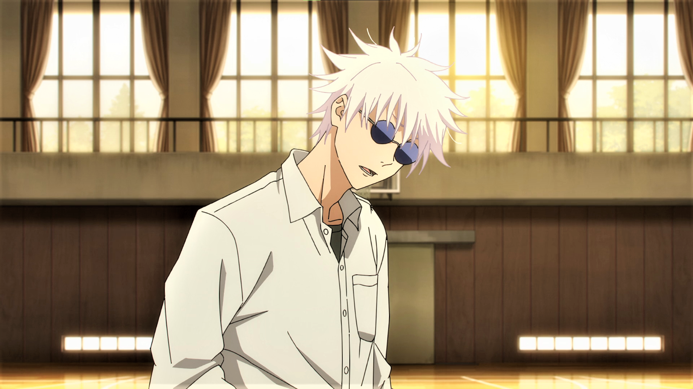
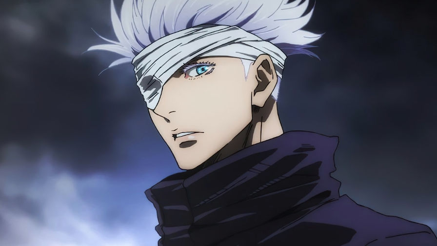
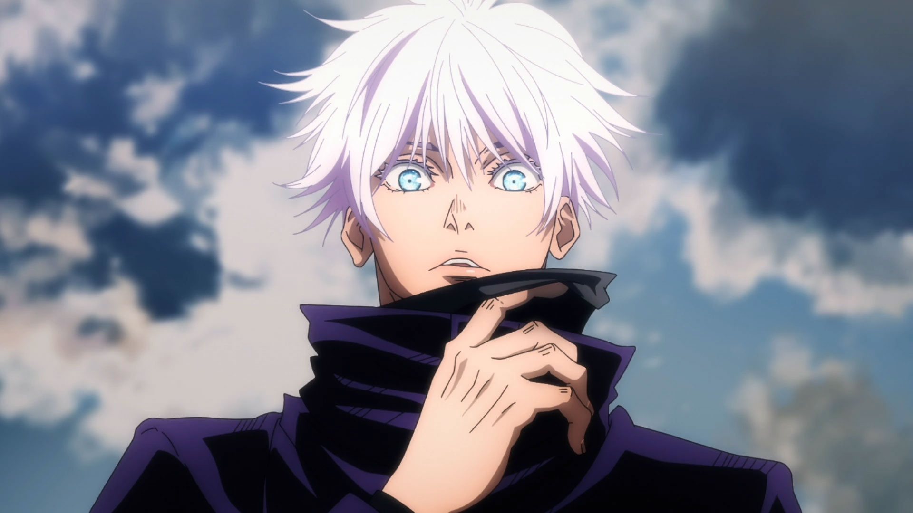

Satoru Gojo é um dos principais personagens de Jujutsu Kaisen, e o sensei responsável pelo trio de protagonistas do anime. Ele é um feiticeiro jujutsu de Grau Especial (o mais alto de todos) e é conhecido por todos do mundo Jujutsu como o feiticeiro vivo mais poderoso.
Além desse título, ele também é a primeira pessoa a herdar os Seis Olhos em cerca de 400 anos. Como nasceu dentro de um dos 3 grandes Clãs do universo Jujutsu, o Clã Gojo, Satoru já seria obrigado a treinar incansavelmente para estar à altura dos membros de sua família. Se isso não bastasse, o rapaz nasceu sendo o portador dos Seis Olhos (um raro Jujutsu ocular que além de percepções aguçadas também permite que seu usuário utilize a técnica chamada Ilimitado em todo o seu potencial).
Os Seis Olhos fizeram de Gojo o feiticeiro mais forte da atualidade, mas também uma criança e adolescente que teve sua cabeça posta à prêmio. Felizmente, Gojo sobreviveu e, com o tempo, acabou entrando na Escola Jujutsu como estudante, onde formou um trio com Shoko Ieiri e Suguru Geto, que se tornaram seus amigos posteriormente.
Satoru Gojo, o Feiticeiro Jujutsu mais Forte


